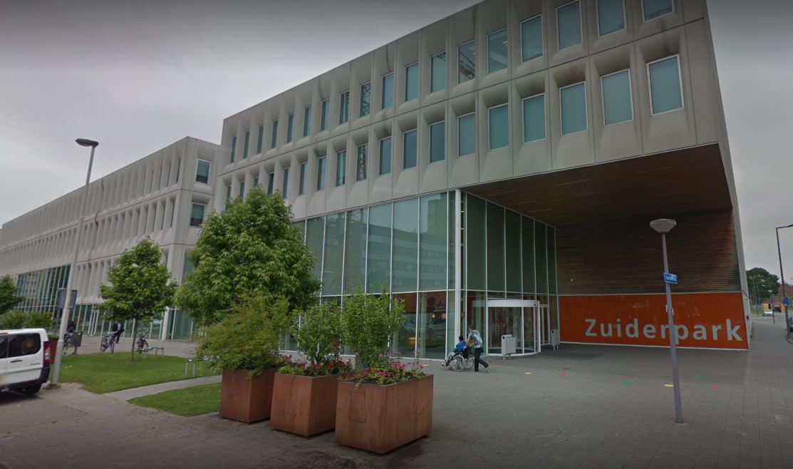

Mijn Vooropleiding?:

Ik zat voordat ik kwam naar het mbo zat ik op het vmbo en mijn middelbare school heet: Zuiderpark College in Rotterdam-Zuid.
Ik volgde op de middelbare school de opleiding economie. Ik werkte wel met computers maar voornamelijk met Exel dus niet echt programmeren of iets.
Dus ik kan niet echt iets van economie toe passen aan deze opleiding.